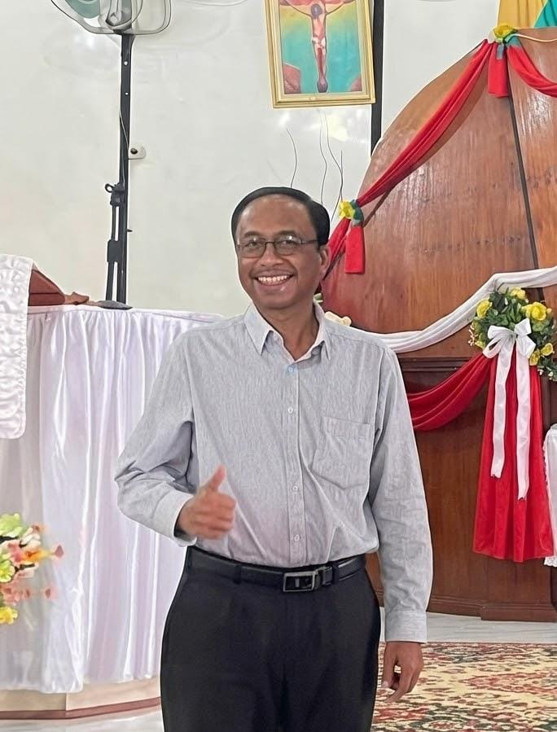
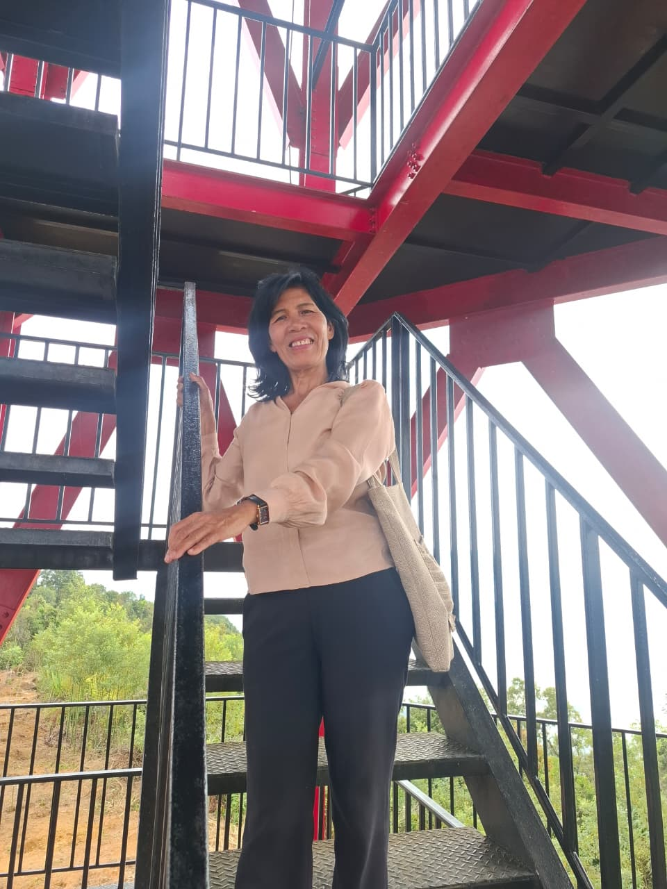
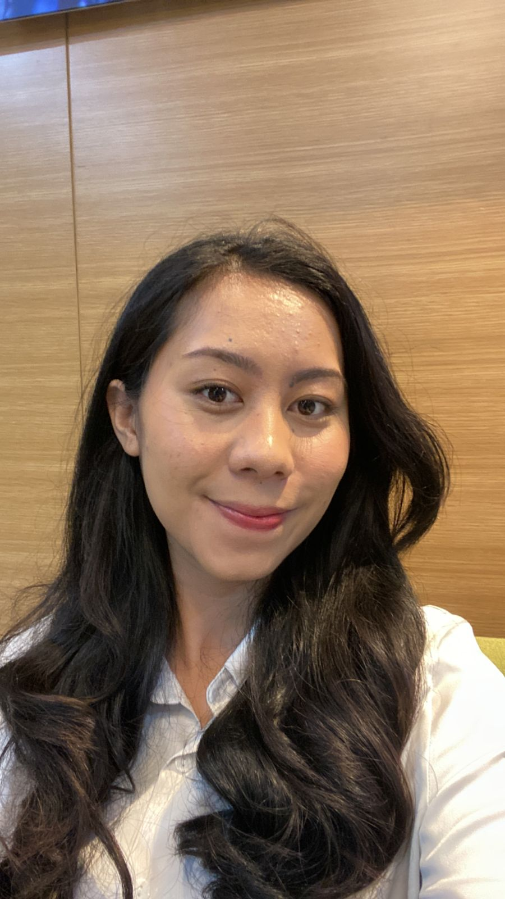
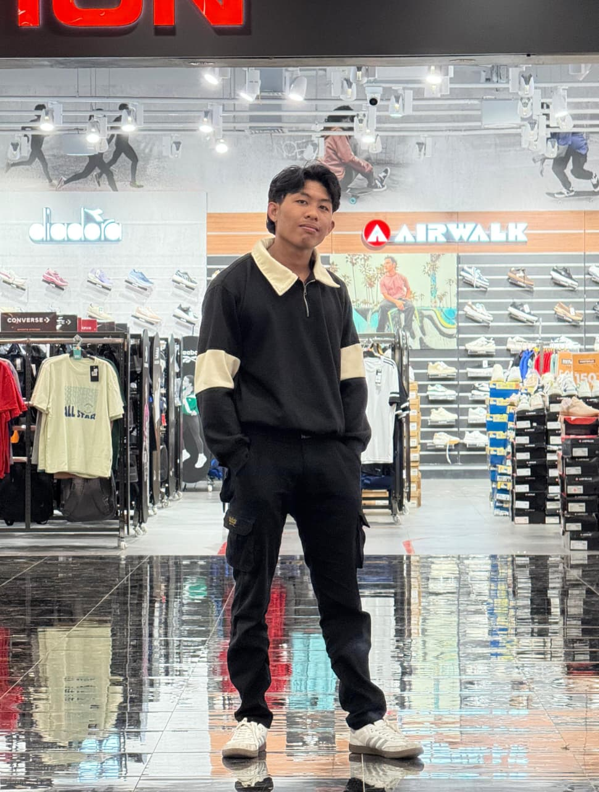
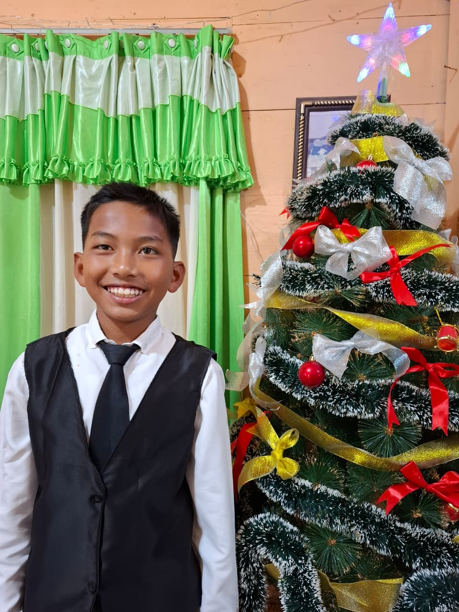

HELLO, I'M
Rifal Zingiber
Sagala.
Mahasiswa Pendidikan Matematika yang memiliki ketertarikan pada teknologi, pemrograman, kecerdasan buatan, dan media pembelajaran digital.

HELLO, I'M
Mahasiswa Pendidikan Matematika yang memiliki ketertarikan pada teknologi, pemrograman, kecerdasan buatan, dan media pembelajaran digital.
ABOUT ME
Saya adalah mahasiswa Program Studi Pendidikan Matematika UNIMED, saya berasal dari kabupaten Samosir. Saya lahir disamosir juga pada tanggal 28 juni 2005.
Saya tertarik mempelajari pengembangan website, kecerdasan buatan, machine learning, serta pembuatan media pembelajaran matematika berbasis teknologi.
Saya juga memiliki hobi di bagian otomotif saya sering melakukan pembongkaran mesin mesin kecil seperti mesin sepeda motor, mesin mesin kecil pertanian, dan juga saya sering juga membongkar bongkar barang elektronik sejak kecil.
MY EDUCATION
Perjalanan pendidikan saya dari sekolah dasar hingga pendidikan tinggi.
NPSN :10209037 ;Akreditasi : B ;Alamat : Ginolat, Ginolat, Kec. Sianjur Mula Mula, Kab. Samosir, Prov. Sumatera Utara, 22396
NPSN : 10208925 Akreditasi : B Alamat : Jalan Raya Limbong Sagala Kec. Sianjur Mulamula, Kab. Samosir
NPSN : 10208949 Akreditasi : A Alamat : Jalan Raya Limbong Sagala Kec. Sianjur Mulamula, Kab. Samosir
Fakultas Matematika dan Ilmu Pengetahuan Alam Jurusan Matematika Program Studi Pendidikan Matematika NIM: 4233111013
MY FAMILY
Keluarga adalah bagian penting dalam kehidupan saya. Mereka selalu memberikan dukungan, semangat, dan menjadi tempat untuk berbagi dalam berbagai keadaan.

Ayahku bekerja sebagai wiraswasta, dulu usahanya adalah sebuah gilingan padi yang menggunakan tenaga air, gilingan padi itu adalah warisan dari kakek ku dulu. Ayahku adalah sosok yang menjadi panutan dan selalu memberikan dukungan serta nasihat kepada kami keluarganya. sayangnya dia sudah wafat di tahun 2022 kemarin di usia nya yang ke 55 tahun.

Ibuku adalah seorang guru di SD, dan ibuku mengampuh mata pelajaran agama kristen disekolahnya. ibuku adalah sosok yang selalu memberikan kasih sayang, perhatian, dan semangat bagi kami. Sekarang ibuku berusia 54 tahun, aku salut dengan ibuku meskipun dia tinggal sendirian yang mencari nafkah bagi kami dia masih sanggup menyekolahkan kami semua.

Aku dan kakakku berbeda usia 2 tahun , tahun lalu kakak ku sudah lulus dari Universitas Negeri Yogyakarta. dan sekarang sudah bekerja di Jakarta. Karena dia sudah bekerja dia sering membantu ibuku dan memberi kami jajan. Kakakku adalah orang yang menjadi teman berbagi dan memberikan dukungan dalam kehidupan sehari-hari.

Adik ku dan aku berbeda satu tahun denganku, sekarang dia kuliah di UNIMED juga tetapi dia mengambil prodi statistika. Adikku adalahadalah sosok menjadi bagian dari keceriaan dan kebersamaan keluarga.

Adikku dan aku memimiliki jarak usia yang lumayan jauh, jarak usia aku dan adikku ini adalah 8 tahun. Sekarang dia masih SMP. dia adalah yang melengkapi kebersamaan dan suasana hangat di dalam keluarga.
CONTACT
Jika ingin berdiskusi mengenai teknologi, pendidikan, matematika, atau project, silakan hubungi saya.